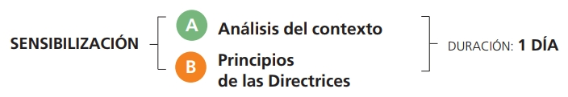
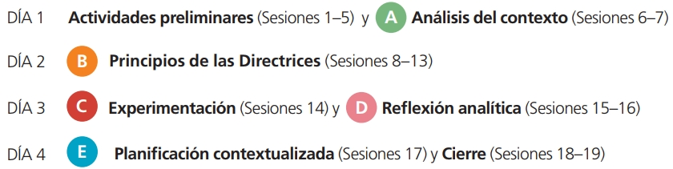

Todos los elementos de la capacitación son fundamentales para alcanzar estos objetivos de aprendizaje:
- Entender el contexto y el proceso de elaboración de las Directrices Voluntarias;
- Explicar los principales temas tratados en las Directrices Voluntarias;
- Identificar los principales actores y procesos y sus funciones respectivas en la gobernanza de la tenencia;
- Evaluar la situación de la tenencia local y realizar análisis de casos específicos en el país;
- Identificar soluciones potenciales para mejorar la gobernanza de la tenencia en el país, a fin de preparar un programa de acción para que las Organizaciones de la Sociedad Civil (OSC) implementen las Directrices Voluntarias;
El programa de aprendizaje, sin embargo, se ha diseñado de forma modular, por lo que puede adaptarlo a sus necesidades de capacitación específicas.
De hecho, los cinco elementos de la metodología pueden implementarse total o parcialmente, dependiendo de los objetivos que desea alcanzar, el tiempo y los materiales disponibles.
Sugerimos un programa de 4 días que comprende 19 sesiones para cubrir todos los elementos básicos, para que pueda alcanzar todos los objetivos de aprendizaje.
¿Cuál es su objetivo?
SENSIBILIZACIÓN
Si solo desea informar a sus participantes sobre las Directrices Voluntarias, y no tiene más de un día disponible, puede implementar los siguientes elementos:

CONCIENCIACIÓN
Si su objetivo es informar a sus participantes sobre las Directrices Voluntarias, para permitirles aplicar sus principios en el contexto de su país, podría implementar los siguientes elementos:
CREACIÓN DE CAPACIDAD
Si desea desarrollar las capacidades de sus participantes para que puedan aplicar las Directrices Voluntarias al contexto de su propio país con éxito, y puedan diseñar un plan de acción, puede implementar los siguientes elementos:

Haga clic en cada opción para descubrir más
The content of your modal.
Análisis del contexto: Esta es la base de toda la capacitación, sobre la cual se basarán todos los otros elementos. Los participantes comparten casos relacionados con la tenencia que conocen, o que han experimentado, y que
representan un desafío para ellos y sus comunidades. Una vez que todos los participantes hayan compartido sus casos, seleccionarán en el plenario dos o tres casos que representen mejor los principales desafíos de tenencia de su país.
Principios de las Directrices: Tras haber analizado el contexto, los participantes explorarán la argumentación y los principios de las Directrices, lo que reforzará su conocimiento sobre cómo pueden recibir apoyo de las Directrices
en la aplicación de una gobernanza responsable de la tierra, la pesca y los bosques en el contexto local.
Experimentación: En este elemento, los participantes ponen los principios en práctica al aplicar directamente en situaciones de juego de roles lo que han aprendido.
Reflexión analítica: A través de la reflexión analítica, los participantes adquieren un entendimiento común sobre la gobernanza de la tenencia en su país. Luego, utilizan los principios de las Directrices Voluntarias y
su experiencia práctica para analizar los estudios de casos que han seleccionado en el análisis de contexto.
Planificación contextualizada: Por último, los participantes tendrán la oportunidad de contextualizar lo que han aprendido sobre su situación y desarrollar un plan de acción adaptado a su movimiento u organización.